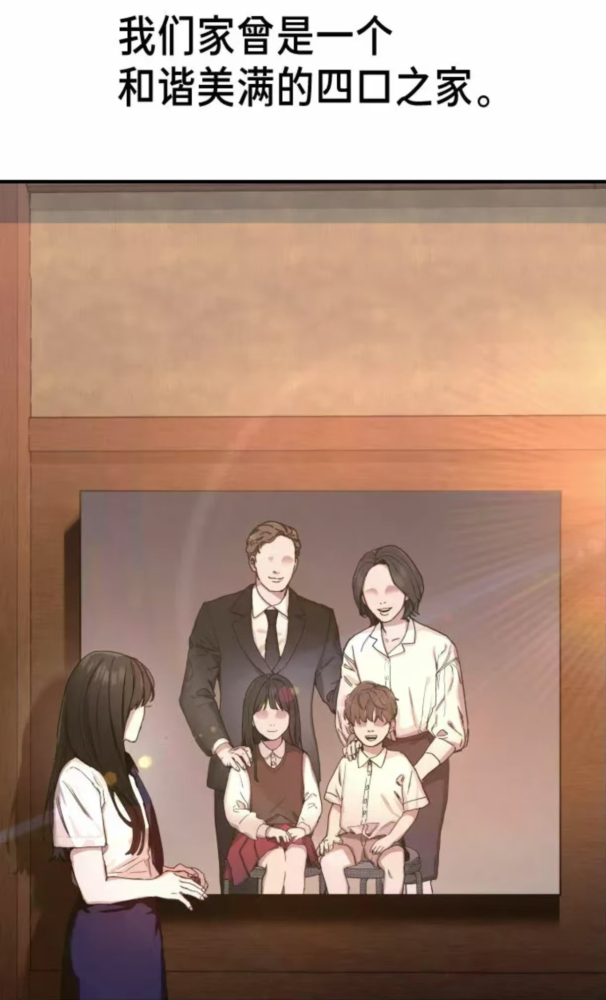
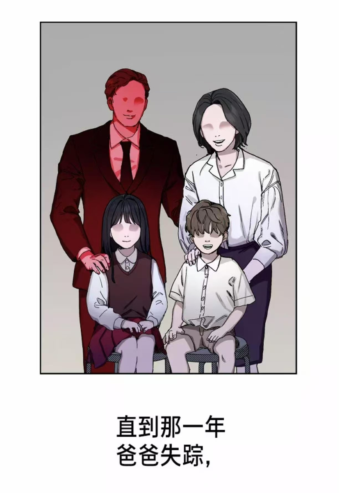
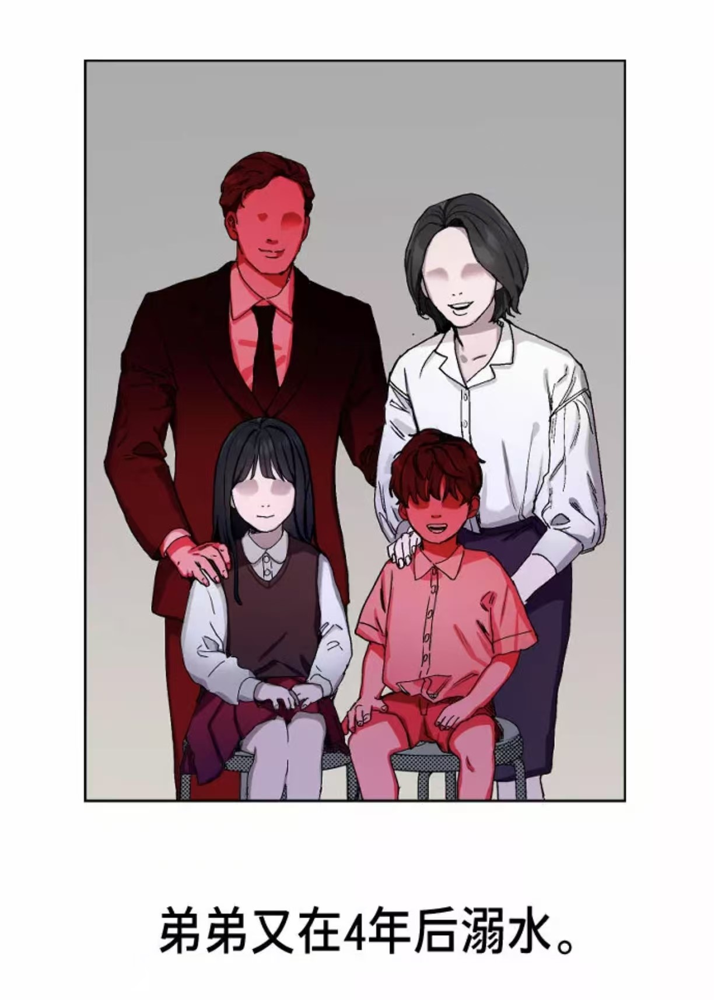
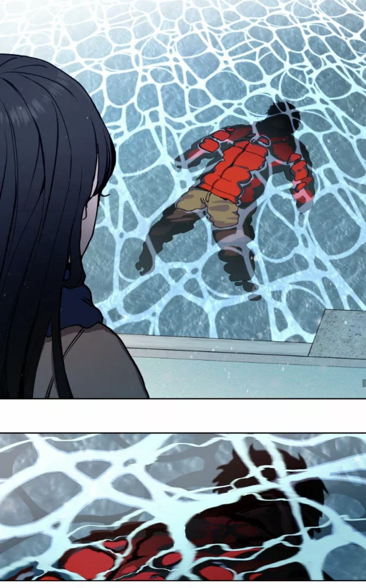
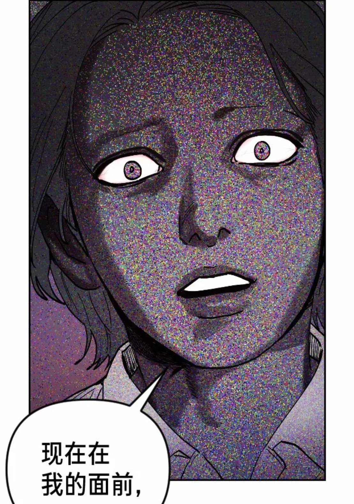
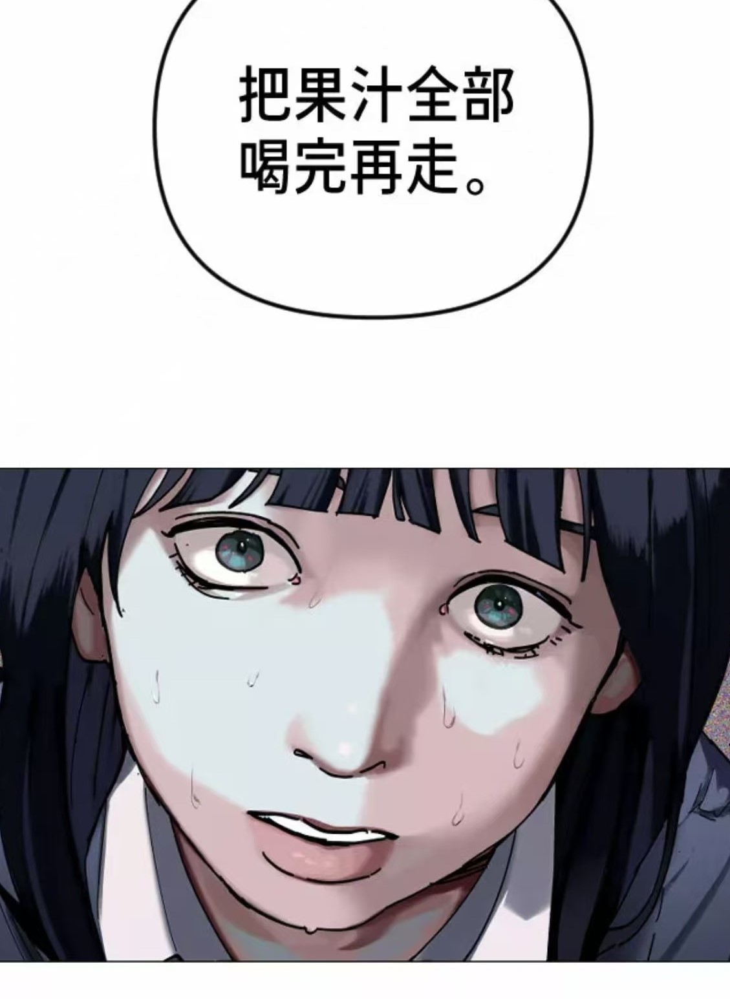

Home
Our family used to be a harmonious and happy family of four, until that year, my father disappeared and my brother drowned four years later, and then I always dreamed of avenging my mother.



I have a younger brother who is three years younger, my mother said that my brother was hopeless, when I thought they were reconciled, then I found my brother drowned and died in one winter, I suspected that my brother's death was related to my mother, but I was so afraid that I dared not ask my mother.


